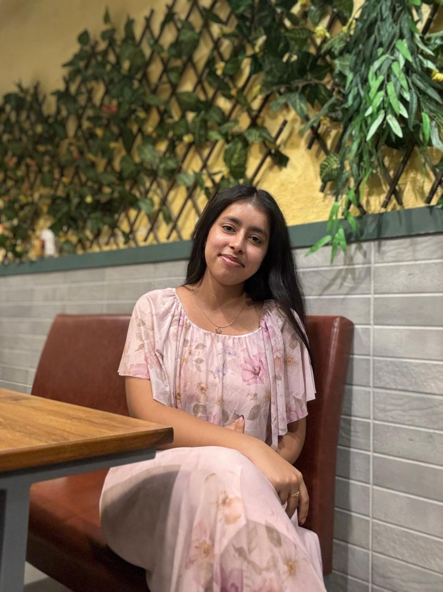

MY RESUME

Ayushi saini
Details:
email: ayushiisaiinii@gmail.com
This resume is current as of May 18, 2025. Future updates and additional work completed after this date may not be reflected.
Profile:
- Dynamic and motivated student with a strong foundation in computer science, specialising in artificial
intelligence and machine learning. Currently pursuing a Bachelor's degree at Chandigarh University, with a
track record of innovative projects such as traffic management systems and predictive analytics.
- Recognised for effective communication, teamwork, and leadership abilities, alongside a capacity to
perform well under pressure.
- Aspiring to become a proficient Al/ML engineer, dedicated to harnessing data-driven technologies
developing solutions that improve efficiency and automation in diverse sectors.
Education:
- Bachelor in computer science with specialization in artificial intelligence and machine learning, CHANDIGARH UNIVERSITY
(to be completed by 2028)
- Matric, Saupin's school, Chandigarh
Scored 2nd position with 90.2%
- Intermediate, GMSSS-16, Chandigarh
Awarded as all rounder with 90.2%
Skills:
- Team collabrotion
- Project management
- Effective communication
- Creative problem solving
- Multitasker
- Ambidextrous
Hobbies:
- Chess
- Drawing portraits
- Coding
Achievements:
- Certified for nptel c language course
- project on traffic lights using 555 timer ICs(selected in phase 2 of project expo)
- Foundations of AI and Machine Learning , coursera
- Python for data science and AI , coursera
- Breast cancer prediction model
- traffic lights using arduino
- Smart dustbin using ultrasonic sensor
- Automatic Rain-Sensing Cloth Retraction System
- Smart segregation dustbin for wet and dry garbage